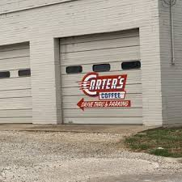
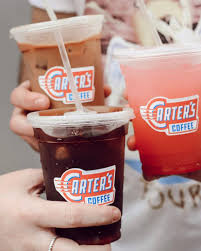
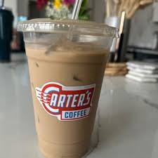
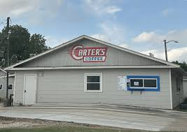

Welcome ☕
Hi again! This page will include my personal coffee spot reviews. From my overall favorite to the best study spots, affordable spots and tastiest coffee this includes it all! For TCU students scroll to the bottom to find the best spots closest to you! I was able to find these recommendations from social media platforms, reviews and word of mouth!
Overall Favorite 🏆
Carter's Coffee is the overall champ!
Why it's my top pick: Carter's includes both a drive through and inside space that serves as an incredible study spot. Carter's was originally a home turned into a coffee shop so the inside vibe is very home-like with multiple living rooms to sit down in. It also includes a front porch sunroom that has outdoor seating for nice weather days.
Convenience for TCU: A 4 minute drive and 20 minute walk.
Personal favorites: Iced Cinnamon Latte with Honey, Iced Blueberry Latte (Seasonal), Arnold Palmer (For non-coffee drinkers). Breakfast Burrito is a great bite to pair with your drink!
Photos
A few photos from Carter's Coffee




Best Study Spots 📚
Top 3: Ampersand, Avoca, and Roy Pope
Ampersand: A great place for TCU students because it's on campus! Although it gets busy quick, tables are constantly opening up and they have lots of seating options. It's easy to squeeze in a study session between classes, and it's the coffee shop that is open the latest.
Avoca: A drive away from TCU into the Magnolia District but a great spacious place to spread out and get work done or even meet for group projects. Almost never a wait for a table at this spot and free parking without having to pay!
Roy Pope: The farthest of my favorite study spots from TCU but is so great if you have a car or if you are a Fort Worth local. Not only does this shop have great coffee, but serves breakfast, lunch and serves as a grocery store too. An overall very well-rounded spot to get work done with indoor and outdoor seating that is always available. The spot is in a very safe area and is only around a 15 minute drive away from campus.
Most Affordable 💰
Top 3 Budget-Friendly Options: Common Grounds, Match Point Coffee, and Fort Worth Coffee Co.
Common Grounds: Common Grounds is one of those spots that feels like a hidden gem near TCU. It’s super cozy, a little more low key than the usual places, and honestly way better for studying without feeling chaotic or overpriced.
Match Point Coffee: Match Point Coffee is perfect when you want something cute but not packed. The coffee is actually really good, and it has that calmer, aesthetic vibe that makes you want to stay a while.
Fort Worth Coffee Co.: Fort Worth Coffee Co. is more simple and classic, but in a good way. It’s one of those places you go when you just want a solid coffee that tastes good and doesn’t feel like you’re overpaying for it.
Best Taste 😋
Top 3: Cherry Coffee Shop, Summer Moon Coffee, and Townes Coffee.
Cherry Coffee Shop: Cherry Coffee Shop stands out for its unique, slightly elevated flavors that feel different from your typical coffee run, making it a go-to when you want something a little more fun and memorable.
Summer Moon Coffee: Summer Moon Coffee is known for its signature sweet cream and smooth taste, perfect if you like your coffee a little richer and love having a variety of flavors to choose from.
Townes Coffee: Townes Coffee keeps it simple but does it really well, with consistently smooth and balanced drinks that make it an easy everyday favorite.
Overall Best Pick for TCU Students 🎓
My Top Pick: Ampersand!
The perfect balance of convenience, quality, atmosphere, and accessibility for students on campus. Whether you need a quick coffee between classes or a dedicated study session, Ampersand delivers on all fronts.
My instagram account: Gracescoffeefortworth
Visit @gracescoffeeftw on Instagram
Hi guys! I loved reviewing coffee so much I even reviewed coffee for another class project, if you want to see more reviews or hear me explain some of these spots check out this instagram page!